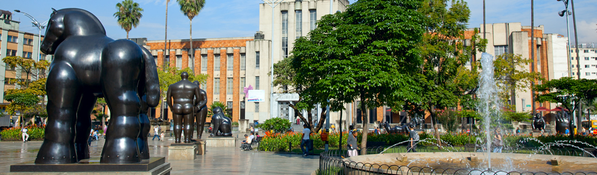

La Plaza Botero es un espacio publico ubicado en el centro historico de Medellin, frente al Museo de Antioquia. En ella se exhiben permanentemente 23 esculturas de bronce donadas por el artista colombiano Fernando Botero a su ciudad natal en el año 2000. Es uno de los lugares mas visitados y fotografiados de Colombia.
Las esculturas se caracterizan por las formas exageradamente voluminosas y redondeadas que son el sello distintivo del estilo de Botero, conocido mundialmente como el boterismo. La plaza es de acceso completamente gratuito las 24 horas del dia y recibe miles de visitantes cada semana.
Fernando Botero nacio en Medellin el 19 de abril de 1932 y es considerado el artista latinoamericano vivo mas reconocido y cotizado del mundo. Desde muy joven mostro talento para el dibujo y la pintura. Estudio en la Escuela de Bellas Artes de Medellin y luego viajo a Europa para perfeccionar su arte en Madrid, Florencia y Paris.
Su estilo unico, caracterizado por figuras humanas y animales de proporciones exageradas y redondeadas, lo hizo famoso en todo el mundo. Ademas de escultor, Botero es reconocido como pintor y sus obras se encuentran en los museos y colecciones privadas mas importantes del planeta. Fallecio el 15 de septiembre de 2023 en Monaco a los 91 años, dejando un legado artistico inmenso para Colombia y el mundo.
Las 23 esculturas de la plaza fueron donadas por Botero en el año 2000 como un regalo a su ciudad natal. Entre las mas famosas estan La Mona Lisa a los doce años, El Hombre a Caballo, La Gorda, El Gato, El Perro y La Mujer con Fruta. Cada escultura pesa entre una y varias toneladas y fue fundida en bronce en talleres especializados de Europa.
Ademas de las esculturas de la plaza exterior, el Museo de Antioquia que esta justo al lado alberga la coleccion permanente mas grande de obras de Botero en el mundo, con mas de 100 pinturas y esculturas donadas tambien por el artista. Visitar la plaza y el museo juntos es la experiencia completa del arte boteriano.
La Plaza Botero esta ubicada en el corazon del centro de Medellin, rodeada de edificios historicos, el Palacio de la Cultura Rafael Uribe Uribe y el Museo de Antioquia. El sector es conocido como el centro cultural de la ciudad y es muy transitado por locales y turistas durante todo el dia.
Cerca de la plaza se puede tomar el metro de Medellin, visitar el Parque de las Luces, recorrer la Avenida El Palo con sus tiendas de libros usados y explorar el mercado popular de San Alejo que se instala los primeros sabados de cada mes. El barrio El Centro es tambien famoso por su gastronomia popular y sus restaurantes de comida antiqueña.
La plaza es de acceso libre y gratuito en todo momento. Se recomienda visitarla en horas de la mañana entre semana para evitar las multitudes del fin de semana. Es un lugar muy seguro y bien iluminado, con presencia constante de policia turistica y vendedores de artesanias locales.
Se recomienda combinar la visita con el Museo de Antioquia que tiene un valor de entrada muy accesible y permite ver de cerca la coleccion completa de obras de Botero. Desde la plaza tambien se puede tomar el metro cable hacia los barrios de las comunas para conocer la transformacion urbana de Medellin.